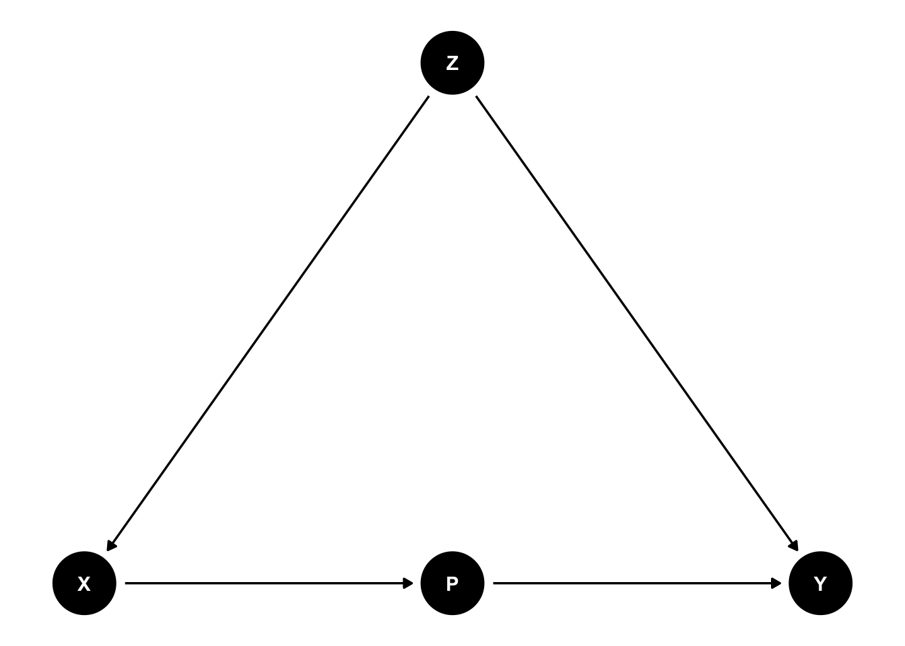
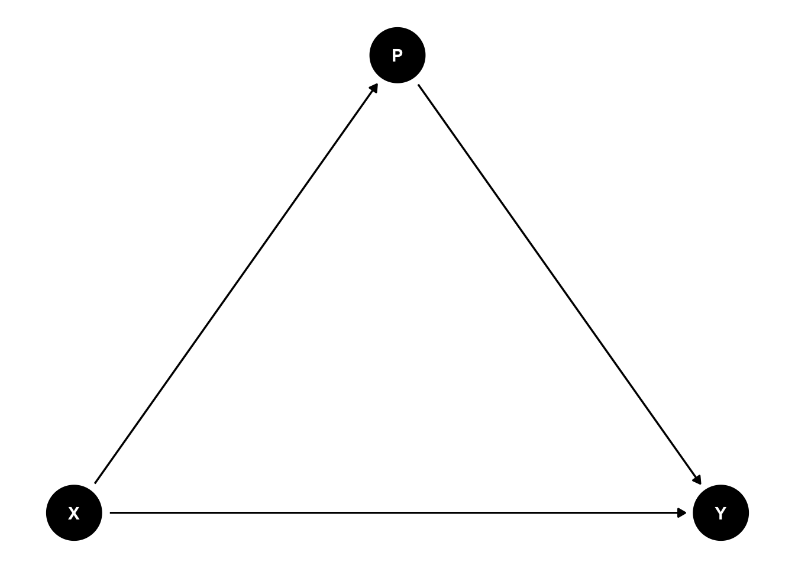

What are bad controls? You can select multiple answers for this question
Based on the DAG below, select the correct answer(s).

What is the correct statistical model to estimate the effect of X on Y?

Suppose that the causal effect of intervention X on Y is 2. You have a confounder C that is correlated with both X and Y. You run two linear models m1 = lm(Y ~ X) and m2 = lm(Y ~ X + C). What is the consequence of including C in the model?
Model
Intercept
Estimate
SE
m1
1.49
2.51
0.0087
m2
0.97
2.00
0.0100
The first model estimates the relationship between X and Y without adjusting for the mediator M, whereas the second model additionally adjusts for M. Based on the two models, which statement best describes the effect of X on Y?
Model
Estimate
SE
m1
1.03
0.0142
m2
0.02
0.0142
Based on the two models above, what is the causal effect of X on Y?
The causal effect is
Can you make causal claims based on observational data?
What is the effect of adjusting for Z in the statistical model?